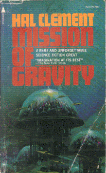

Mission of Gravityby Hal Clement
publisher: Nesfa Press
Fiction, 174 pages | 
(book cover art, Copyright ©1954 Doubleday & Company, Inc)
Used with Permission. |
Return to the Book MenuPrevious|Next
Description:
An unmanned mission to a most unusual world has been lost on the planet's south pole - a place where the gravity is over 700 times stronger than Earth's! One human lands on a different part of the world, where gravity feels weaker, and negotiates with the natives to have them mount an expedition to find the missing rocket. This is a story of their expedition.
Recommended for: adventurists, technologists, people interested in the extremes of science, people who are interested in extraterrestrial life.
Note: This book has recently been republished. It can be found (together with its sequel) in the book titled Heavy Planet, also by Hal Clement.
Did-you-read questions:
Deadline: February 1, 2005.
These should be easy questions, but you should have the questions ready and keep an eye out during your reading. Each question should be answered with 1-2 sentences.
Note: these questions are not probably not the most important part of the book! Your essay will not have to cover these questions!
- What happens to the tank when Lackland goes to investigate the beached animal?
- What object does Barlennan collect in exchange for the first radio, to his first mate's dismay?
- What new piece of armament does the Bree's munitions officer (Krendoranic) demonstrate when the Bree's crew are accused of lying and spying?
- What new device is tested on Dondragmer near the south pole?
- What is the final form of the Bree?
Report Questions:Deadline: Peer Review Session on February 8, 2005; paper due February 10, 2005.
You should write a 3 - 4 page essay on one of the following questions. Your essay should include examples and references to the book, unless otherwise specified. Page number references are sufficient for citing material from the primary book. If you use outside materials, cite your sources in full. If you would rather write on a different topic, you may, but clear it with Mr. Howe or Ms. Sullivan first.
- Life on Mesklin is described from both a human and Mesklin point of view. What do you think a Mesklinite would think of earth? Describe some surprises that they might meet with both man-made and natural situations, based on what they normally experience.
- What do you think of Barlennan's final bargain? Is it a good one? Should both parties have agreed to it?
- Barlennan is certainly an interesting character. Compare and contrast him to one or two comparable characters from human history or literature.
- This book was written approximately 50 years ago. Do you think it has stood to the test of time? Does it still feel realistic, or are there problems you see with the story, perhaps based on differences in technology between 1950 and today?
Graphic and Presentation:
Deadline: February 21 - March 3, 2005.You will give a 10 minute presentation on both of the following:
- Convince your peers that they should (or should not) read this book. (This may include a brief summary of the book.) Give examples of what was cool or worthwhile in the book, and what you got out of it (or didn't).
- Describe a (realistic) science idea that you learned about in this book, citing information from at least 2 external sources (other than the dictionary). If you would like help choosing or understanding an idea from your book, you are invited to come talk to Mr. Howe or Ms. Sullivan.
Note: This presentation should not be just a reading of your paper!Along with this presentation, you should have a graphic that will go with it. A Power Point presentation is recommended, but if you have a special idea for a something else, such as a model, an original video presentation, or a well done drawing/ painting/ sculpture/ etc., you may do so, provided it involves a similar level of effort and polish. Speak to Mr. Howe or Ms. Sullivan first if you are considering an alternate graphic format to the Power Point.
Return to the Book MenuPrevious|Next